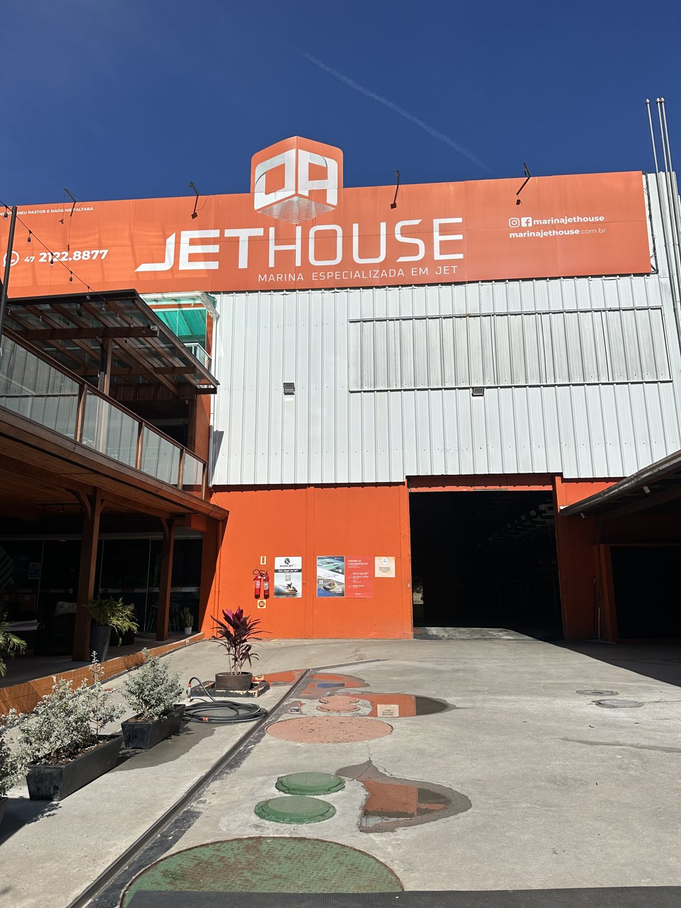
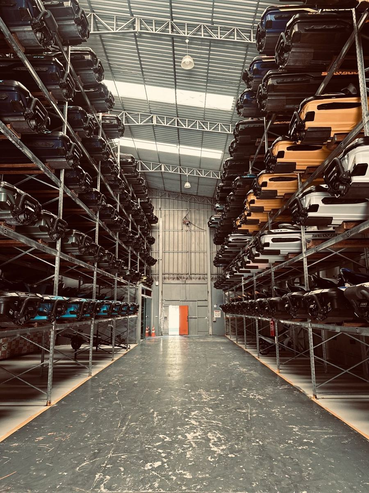
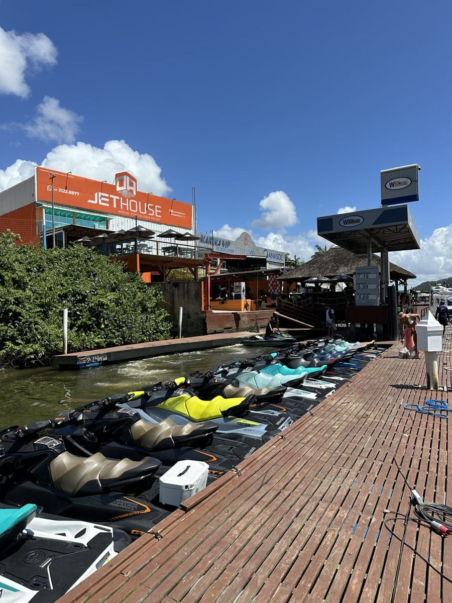
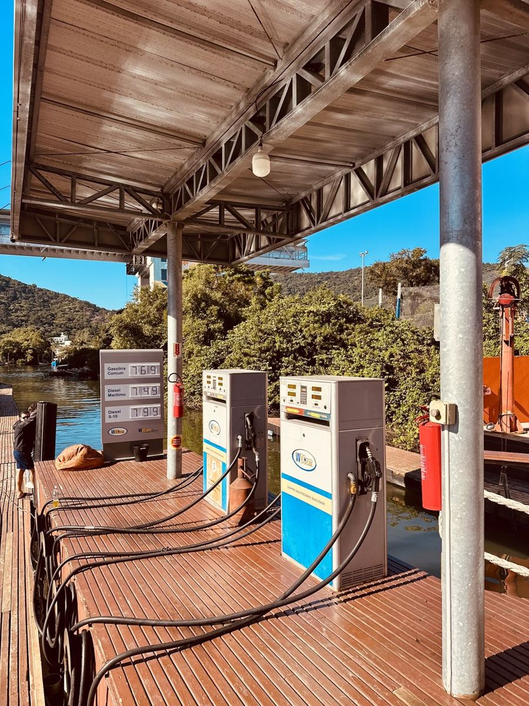
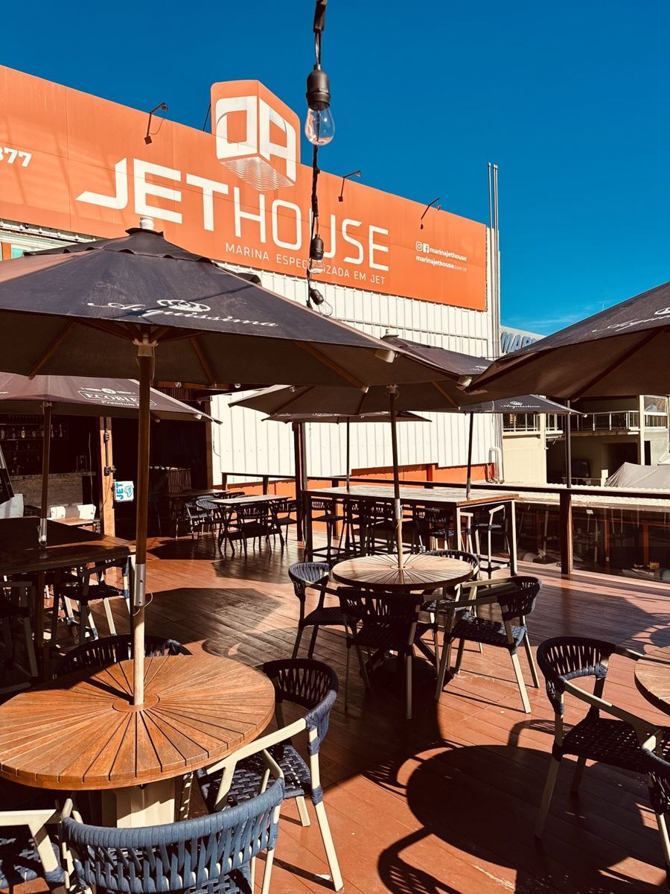

Guarda de jet ski em Balneário Camboriú
Na Marina JetHouse: você chega e o seu jet já está na água
Como funciona a guarda
Você só se preocupa em navegar. O resto fica com a equipe da marina.
Reserve pelo app
Marque o horário da saída no aplicativo da marina e, se quiser, peça para encherem o tanque.
Chegue e saia
Quando você chega, o jet já está na água, pronto para sair.
Navegue
Aproveite o mar de Balneário Camboriú e região.
Só entregue
Na volta, a equipe tira da água, lava, adoça, passa silicone e guarda até a próxima saída.
Planos de guarda de jet ski
Quanto mais longo o plano, menor a mensalidade.
Anual
R$ 990/mês
Semestral
R$ 1.490/mês
Trimestral
R$ 2.290/mês
Mês avulso
R$ 3.390
Diária
R$ 450
Tudo o que você precisa na marina





- Saída direta para o mar
- Aplicativo exclusivo de descida
- Posto de combustível
- Estacionamento
- Restaurante
- Conveniência completa
- Espaço para eventos
Perguntas sobre guarda de jet ski
Onde fica a guarda de jet ski?
Na Marina JetHouse, em Balneário Camboriú.
Como funciona a saída?
Você reserva o horário pelo aplicativo da marina. Quando chega, o jet já está na água, pronto para sair.
Dá para abastecer na marina?
Sim. A marina tem posto de combustível, e você pode pedir pelo aplicativo para encherem o tanque antes da saída.
Quem cuida do jet depois do passeio?
Você só entrega. A equipe tira o jet da água, lava, adoça, passa silicone e guarda até a próxima saída.
Tem vaga disponível?
Tem mais de uma vaga disponível no momento. Me chama no WhatsApp para garantir a sua.
Garanta sua vaga na JetHouse
Me chama no WhatsApp que eu te passo os planos e as vagas disponíveis.
Quero guardar meu jet (47) 99267-3112 @marcelojet.bc